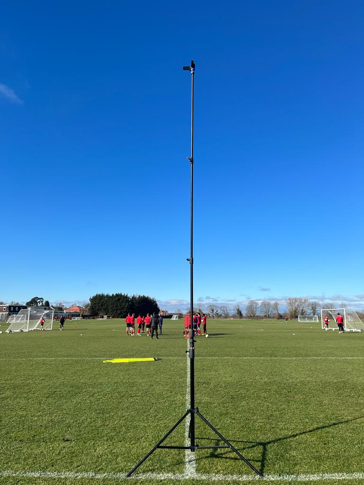
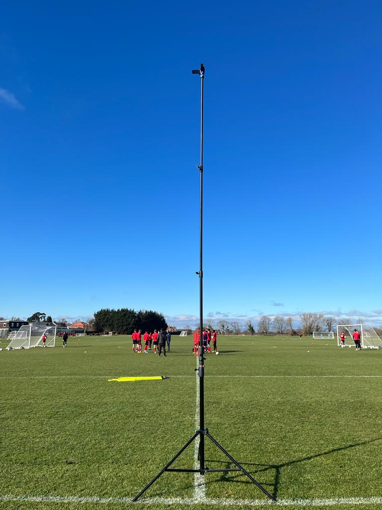

STRONG SPORTS KNOWLEDGE
of being an athlete myself and keen following of cricket & football
of being an athlete myself and keen following of cricket & football
Sports and Analysis are my two prominent passions
Know how to differentiate between the two
Empathy is innate to my personality
Always try viewing from new facets
Professional and a Team Player
Receptive to feedback
Able to engage with senior management
It is visceral in my cognition
Attention to details
Practical Learner
VEO Cameras
Standard Cameras
AP Wireless Cameras
Klipdraw
Studio
EXCEL
PYTHON
Per coach's & team's playing philosophy
Opta
Statsbomb
Wyscout
ESPNcricinfo
Cricviz
Post-Match Analysis
Opposition Analysis
Individual Player Analysis
Good at spotting
Strengths & Weaknesses Report
Match-Up Report
Statistical Databases
Tableau
R
NACSPORT
Dartfish
Hudlsportscode
SBG
Longomatch
Vidswap
Tableau
R


 
